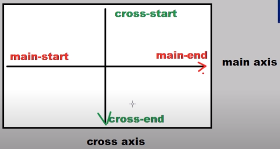

Introduccion de flexbox
Los sitios web estaban construidos estructuralmente a base de floats y tablas por lo que al momento de realizar un mínimo cambio el sitio web colapsaba. En la actualidad se hacen los sitios web a base de flex y grid para evitar los accidentes anteriores.
Flex requiere de un container y de un item: Si le vamos a dar display flex a cualquier elemento de por si el elemento o contenedor se comporta como un bloque(igual que un display block), donde realmente se va a notar los cambios es en los elementos dentro del contenedor.
Flexbox tiene dos ejes en un plano cartesiano seria el eje-x y el eje-y pero en flexbox es main axis y cross axis.
